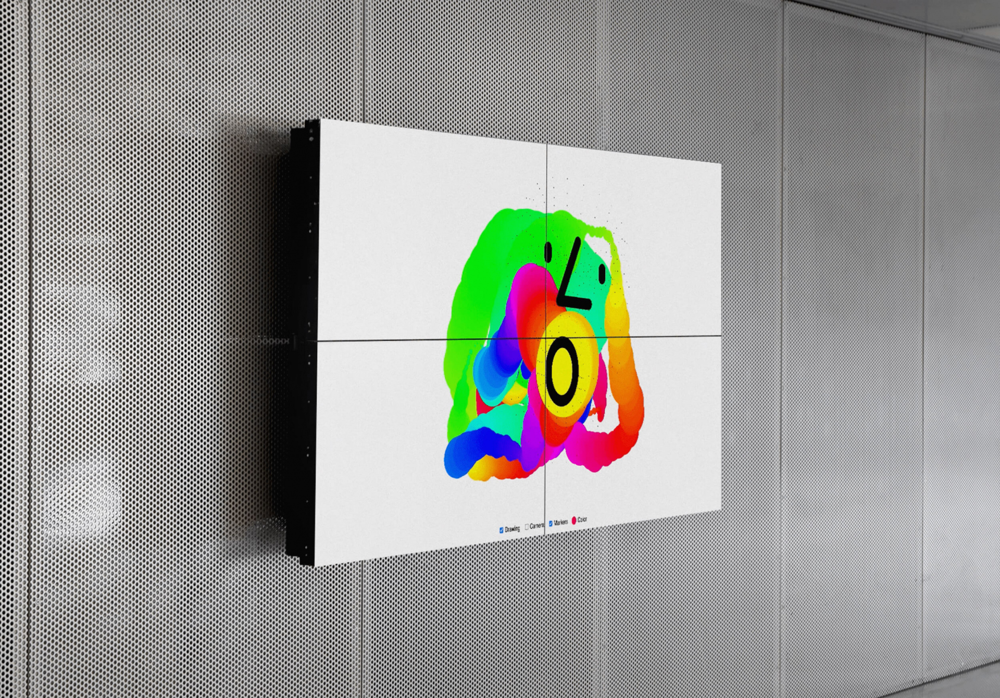

About
SiX stands for "Drawing for Social Re-connectivity. Exploring Inclusive, Collaborative and Digital Environments for Patients with Partial to Complete Locked-In Syndrome." This research project aims to break down communication barriers for individuals with partial to complete Locked-in Syndrome (LIS) using digital drawing as a non-verbal tool. SiX transforms limited physical or ocular movements into digital drawing commands by using the human body itself as the interface. The project is built on the principle that creative expression and communication are fundamental human needs, especially for those with severe motor limitations.
LIS, often caused by brain stem damage, is a neurological condition that results in paralysis of almost all voluntary muscles. Individuals with LIS frequently retain full cognitive function, but struggle to express themselves and interact with their surroundings. SiX seeks to provide LIS patients with a more expressive and engaging form of communication that goes beyond conventional spelling interfaces or communication boards.

Mission and Action Lines
While "Mission and Action Lines" are not specifically laid out for SiX in the sources, the project's goals and methodologies suggest the following:
Research Topics
SiX focuses on several key research areas: Digital Drawing as a Communication Tool: Exploring how effective digital drawing is at conveying complex emotions and ideas for LIS patients. Human-Computer Interaction (HCI): Examining how the human body can function as an interface, translating even the smallest movements into drawing commands. Design for Health: Developing user-centred design strategies that meet the specific needs and capabilities of LIS patients. Collaborative and Immersive Environments: Creating digital environments where LIS patients and their support networks can interact and collaborate.
Read more Outputs
The SiX project expects to achieve the following key outputs: A set of digital drawing activities: Specifically created to help LIS patients communicate and express themselves. Guidelines and manual of procedures: Providing clear instructions on how to use and implement the digital drawing tools. Replicable prototypes: Allowing healthcare providers to use and test the technology in their settings. An online collaborative platform: Enabling LIS patients and their support networks to connect and collaborate from anywhere. A white paper: Outlining the system's architecture, hardware, and software design infrastructure. Enhanced understanding of the capabilities and needs of LIS patients regarding social interaction.
Read moreActivity Plan
The SiX project will actively involve students from various undergraduate and graduate study cycles, including those in Communication Design, Design of Health Technologies, and related fields. Students will have opportunities to participate in co-design workshops, contribute to prototype development, and engage in research activities. This will provide valuable learning experiences for students while enriching the project with diverse perspectives and skills. The project will also engage with PhD and MA students through workshops and research activities, contributing to knowledge dissemination and integration into academic curricula.
Read moreTeam Members and Institutions
The SiX project has a diverse group of researchers and collaborators:
Principal Investigator
Core Members
Consultants
Collaborative Institutions
- I2ADS - Instituto de Investigação em Arte, Design e Sociedade
- ID+ Instituto de Investigação em Design, Media e Cultura
- APELA (Portuguese Amyotrophic Lateral Sclerosis Association)
- ADITGAMES (Association for the Development of Technological Innovation and Games in Health)
- i3S-AL (Institute for Health Research and Innovation - Associate Laboratory)
- Fraunhofer Center for Assistive Information and Communication Solutions
These collaborations will ensure a multidisciplinary approach and provide valuable insights and resources for the project.
Engagement with Students and Researchers
The SiX project will actively involve students from various undergraduate and graduate study cycles, including those in Communication Design, Design of Health Technologies, and related fields. Students will have opportunities to participate in co-design workshops, contribute to prototype development, and engage in research activities. This will provide valuable learning experiences for students while enriching the project with diverse perspectives and skills
The project will also engage with PhD and MA students through workshops and research activities, contributing to knowledge dissemination and integration into academic curricula.